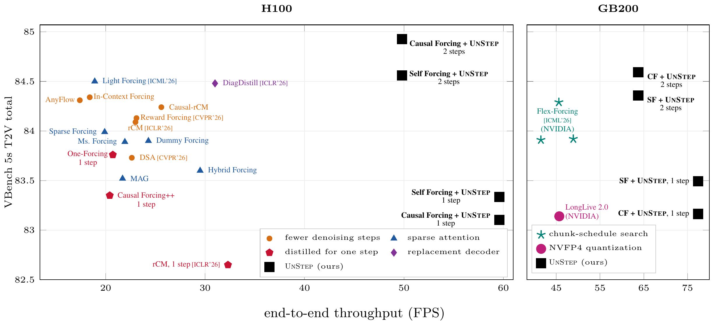

Optimize the runtime
Efficient attention calls and KV indexing, fused Triton RoPE, and VAE precision, memory-layout, and convolution optimizations.
Meta Superintelligence Labs
Training-Free Acceleration of Causal Video Diffusion
with Fewer Steps Than Distillation
The same model. A faster way to run it.
Few-step video models are fast, but not fast enough. UnStep is an inference-only wrapper that accelerates existing causal video models with fewer denoising steps, a bounded attention cache, and a faster transformer and decoder runtime.
Two training-free mechanisms recover lost quality: refining the existing clean-cache pass and applying truncated SVD to attention value and output projections. The result is faster generation from the same pretrained checkpoint.
01 / Results
Five-second video generation.
832 × 480. Batch size
one.

One wrapper, applied to Self Forcing, Causal Forcing, and LongLive 1.0 without retraining.
H100 results from the paper. Throughput is generation FPS, not video playback rate. Headline speeds are rounded.
| Checkpoint | FPS | VBench total |
|---|---|---|
| Self Forcing | 17.0 | 84.31 |
| + UnStep | 49.8 | 84.56 |
| Causal Forcing | 17.0 | 84.82 |
| + UnStep | 49.8 | 84.93 |
| LongLive 1.0 | 17.0 | 83.31 |
| + UnStep | 49.8 | 83.42 |
02 / Method
All at inference.
No finetuning. No redistillation.

Efficient attention calls and KV indexing, fused Triton RoPE, and VAE precision, memory-layout, and convolution optimizations.
Keep four denoising steps for the first chunk. Use two for later chunks, with a bounded temporal KV window.
Refine and reuse the existing clean-cache pass, then apply truncated SVD to the attention value and output projections.
03 / In motion
Selected image-to-video examples
from the paper appendix.
Video could not be loaded. Open the MP4
Video could not be loaded. Open the MP4
04 / From text alone
Text-to-video frames from the appendix.
Self Forcing + the
two-step UnStep wrapper.
Frames at 0, 1.25, 2.5, 3.75, and 5 seconds. Videos were generated from extended VBench prompts; original prompts are shown here.
Beyond five seconds
UnStep also transfers to image-conditioned generation and 30-second streaming, without task-specific retuning.
30-second streaming on H100
One-step generation on GB200
Long-video and one-step settings are separate experiments reported in the paper.
Citation
Citation forthcoming.